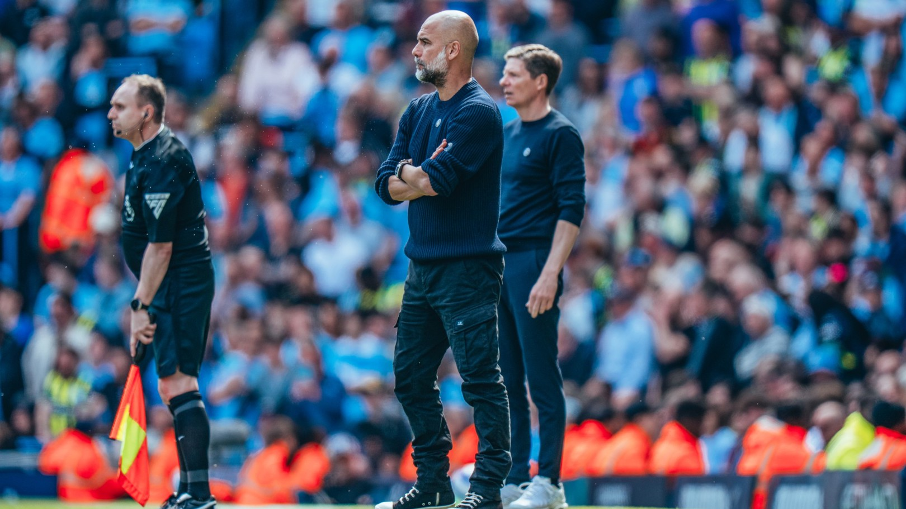

CITY STUDIOS / FOUR PART DOCUSERIES
A BEAUTIFUL
OBSESSION
An unfiltered look at the final chapter of Pep Guardiola’s era at Manchester City—inside the dressing room, the boardroom, and the pursuit of a legacy.
▶FIND YOUR FORMAT ↓
AUTHORISED DISTRIBUTION HUB
CHOOSE YOUR WAY IN
Select a preferred destination. Link availability is managed by the site administrator.
✓Distribution notice: this page is intended for viewers accessing authorised copies. Please use only the link options published by the administrator.
iFree-link availability: if MEGA or Google Drive shows a download or transfer limit, choose another available link or try again in a couple of hours.
NOTHING IS ETERNAL
THE END OF AN ERA,
TOLD FROM WITHIN.
Four episodes. Two pivotal seasons. One club confronting change while its defining manager chases every last margin.
- 04
- PART SERIES
- 02
- SEASONS INSIDE
- 01
- FINAL CHAPTER